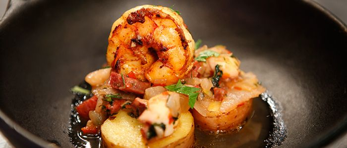

Jacan
Um chef de 'tomperamento' forte
Hoje o chef Jacan vai ensinar uma receita

- Ingredientes:
- 700 g de camarão
- 700 g de polvo
- 5 batatas
- 3 dentes de alho
- 5 fatias de presunto parma
- 2 cebolas roxa (média)
- 2 colheres (sopa) páprica doce
- 1/2 pimentão
- 250 g de chouriço
- açafrão (a gosto)
- sal (a gosto)
- pimenta do reino (a gosto)
- Preparo:
- Primeiro passo é fazer um marinado do camarão com páprica doce, alho, sal e pimenta do reino, e na sequência acrescentar o presunto parma e fritar.
- Em uma panela de pressão, cozinhe o polvo com cebola roxa e alho por 8 minutos. Abra, reserve o caldo, e corte o polvo em pedaços para refogar com cebola roxa, pimentão, chouriço, alho, açafrão e o caldo do povo.
- Cozinhe as batatas e em uma panela separada frite o chouriço, e depois utilize o óleo da fritura do chouriço para fritar as batatas cozidas.
Veja mais informações